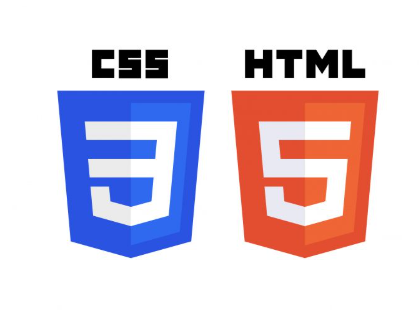

O CSS (Cascading Style Sheets) é uma linguagem utilizada para definir a aparência visual de páginas na internet. Com ele, é possível controlar cores, fontes, espaçamentos, posicionamento de elementos e diversos outros aspectos visuais. Antes do CSS, todo o estilo era feito diretamente no HTML, o que deixava os códigos confusos e difíceis de manter.
O CSS foi proposto em 1994 por Håkon Wium Lie, quando trabalhava no CERN. A ideia principal era separar o conteúdo da apresentação visual, permitindo que desenvolvedores pudessem organizar melhor seus códigos. Em 1996, o CSS1 foi oficialmente lançado pelo W3C (World Wide Web Consortium), trazendo funcionalidades básicas como cores, fontes e alinhamento de texto.
Com o passar do tempo, o CSS foi evoluindo para atender às necessidades da web. O CSS2, lançado em 1998, trouxe melhorias importantes, como posicionamento de elementos e suporte a diferentes tipos de mídia. Já o CSS3 não foi lançado como uma única versão, mas dividido em módulos, cada um responsável por uma parte da linguagem, como animações, transições, sombras e layouts responsivos.
Essas evoluções permitiram que os sites se tornassem mais modernos e interativos, melhorando a experiência do usuário e tornando o desenvolvimento mais eficiente.
Atualmente, o CSS é essencial no desenvolvimento web. Ele é utilizado em praticamente todos os sites da internet, permitindo a criação de páginas responsivas, que se adaptam a diferentes dispositivos, como celulares, tablets e computadores. Além disso, frameworks como Bootstrap e ferramentas modernas ajudam a acelerar o desenvolvimento utilizando CSS.
Com o avanço da tecnologia, o CSS continua evoluindo, trazendo novos recursos e facilitando ainda mais a criação de interfaces bonitas e funcionais.
O uso do CSS é fundamental para manter a organização dos projetos web. Ele permite separar estrutura (HTML), estilo (CSS) e comportamento (JavaScript), o que facilita a manutenção e atualização dos sites. Além disso, melhora a acessibilidade e a performance, já que um mesmo estilo pode ser aplicado a várias páginas ao mesmo tempo.
